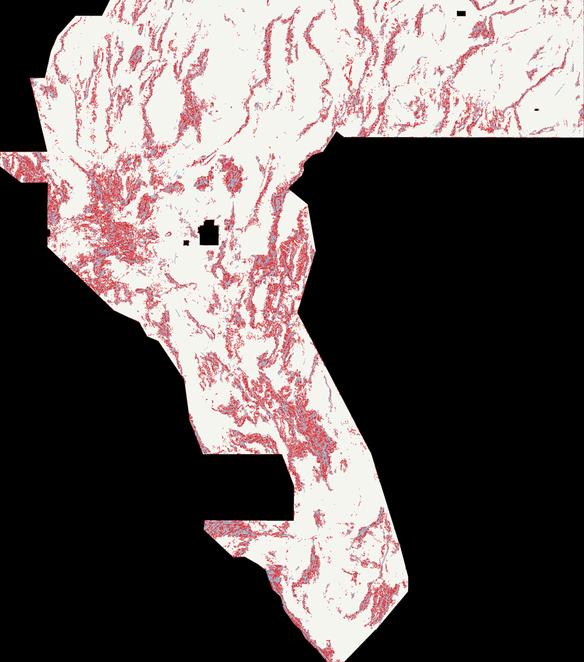

Segment-holdout pooled DTI
0.21383
Official metric (α=0.2, β=0.8, 300 m triangular kernel) against hidden catalogue segments, TP/FP/FN pooled over three folds. Best of 33 budget × spacing × stand-off configurations.
A reproducible fault-discovery experiment for the DOE GEMS challenge: a physics-only learned ranker over 94 multi-scale, persistence-certified geophysical features, emitted as 80,000 off-catalogue dots and validated on a leave-fault-segment-out holdout. Shipped with fail-closed format checks.
The download activates only after the candidate wins the leave-fault-segment-out holdout sweep and the file is reopened from disk and checked cell-by-cell against the competition grid, CRS, transform and the [0,1] value rule.
No competition raster, registered baseline evaluation, spatial holdout pass, or submission TIFF is present in this checkout. Do not upload a placeholder.
The published file won a 33-configuration sweep on a leave-fault-segment-out holdout, in 3 of 3 folds. No public-score forecast is published for it: the holdout ranks configurations, it does not predict a leaderboard number.
0.21383
Official metric (α=0.2, β=0.8, 300 m triangular kernel) against hidden catalogue segments, TP/FP/FN pooled over three folds. Best of 33 budget × spacing × stand-off configurations.
0.2486 vs 0.1530
Quadrant holdout, budget 160,000: supervised physics ranker versus the unsupervised persistence consensus used by every earlier GEMSDOE submission. Uniform random placement scores 0.1957 — the unsupervised surface is below random.
0.0688
Adding distance-to-catalogue features collapses the model onto the catalogue itself: the "physics + geometry" and "geometry only" arms are bit-identical, because the training positives all sit at distance zero.
Best score this project has recorded: —. Public leaderboard top read on 2026-10-05: —.
Red: the 80,000 emitted dots (dilated for visibility). Blue: the public USGS/INGENIOUS catalogue. Cream: the scored footprint. The emission follows range-front and intra-basin structural corridors while staying at least 300 m clear of every mapped trace.

Because FNw = |G| − TPw, the official index simplifies to DTI = TPw/(0.8|G| + 0.2 TPw + 0.2 FPw), which strictly increases when every predicted value is scaled up. For a fixed set of predicted cells, soft probabilities can only lose. This file emits exactly 1.0 or 0.0.
We downloaded the highest-scoring historical raster and measured it: 37,654 binary dots, perfect dotting (local mass 1.000), minimum 2.236 px off-catalogue. Its score came from emission geometry. The detector was therefore the remaining lever.
94 label-free features — raw bands, multi-scale gradient and Hessian-ridge responses, scales-survived counts, and H0 superlevel-set persistence per physics family — fitted with gradient boosting. On a blocked holdout it scores 0.2486 against 0.1530 for the unsupervised persistence consensus, which is itself below the 0.1957 random floor.
Training positives are the catalogue, so a distance-to-catalogue feature separates them perfectly and the booster discards all 94 physics columns. The physics+geometry and geometry-only arms come out bit-identical at 0.0688 versus 0.1973. Label-free features are not a style choice here; they are a requirement.
Hiding a third of the 3,199 catalogue segments per fold: only 7.3–7.9% of hidden fault cells lie within 300 m of a visible fault (base rate 5.8–6.0%), 27–30% within 600 m, median distance ~1 km. That is the measured reason a 3 px stand-off beats 2 px, 0 px, 4 px and 6 px at every budget tested.
33 configurations: stand-off 3 px wins everywhere, 2.9 px dot spacing beats 3.5 px everywhere, and the budget plateau runs 60k–100k with a peak at 80,000 dots. The winner leads in all three folds individually.
We test whether stable, multiscale ridge structure adds value over a matched-budget single-scale prospectivity map—not whether a visually compelling map can tell a story.
The leading measured family is now strain-dominated, with buried-basin, concealed-contact, tilt-edge, and pure-persistence alternatives kept explicitly separate for review.
The published candidate uses topological persistence as a tertiary structural prior. H0 bars still represent stable connected-component maxima, not geological proof or explicit line continuity.
The downloadable TIFF appears only after its measured descriptors clear the 31-map public-score calibration under the pessimistic physical model, then pass full GeoTIFF revalidation from disk.
The public board changes and does not show submission filenames. No cached rows or automated refresh are maintained here because of the organizer's Terms of Use.
Open the official DrivenData leaderboard ↗ for the current values. A one-time review on 2026-10-05 found the task's stated 0.3195 was not the highest score in that snapshot; see the evidence-graded analysis for the caveat.
The leaderboard does not expose model or TIFF filenames. The H33 0.2778 pairing remains user-reported; the owner page describes a 0.2747 projection and an unscored proxy.
Dynamic public page. Verify the current row directly; GEMSDOE37 does not cache it.
The downloadable TIFF is selected against 31 owner-side maps with known public DTI, because the catalogue pseudo-holdout was measured to be anti-correlated with the public score (Spearman −0.10). Earlier pseudo-holdout gains, including the H2 rank-mix 0.0369 vs. 0.0281, are not evidence of competition performance.
User-provided file-score pairing; score-to-file attribution is not verified.